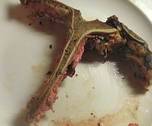

T-Bone Steak
5 von 6T Bone Steak (ca 600. gr) mit Olivenöl, Knoblauch Senf, Pfeffer und etwas Salz Marinieren. Einige Stunden ziehen lassen. In einer Pfanne scharf anbraten und bei Niedertemperatur ca. 30 min. fertig garen.

T Bone Steak (ca 600. gr) mit Olivenöl, Knoblauch Senf, Pfeffer und etwas Salz Marinieren. Einige Stunden ziehen lassen. In einer Pfanne scharf anbraten und bei Niedertemperatur ca. 30 min. fertig garen.

Montagsplausch Nr. 189.